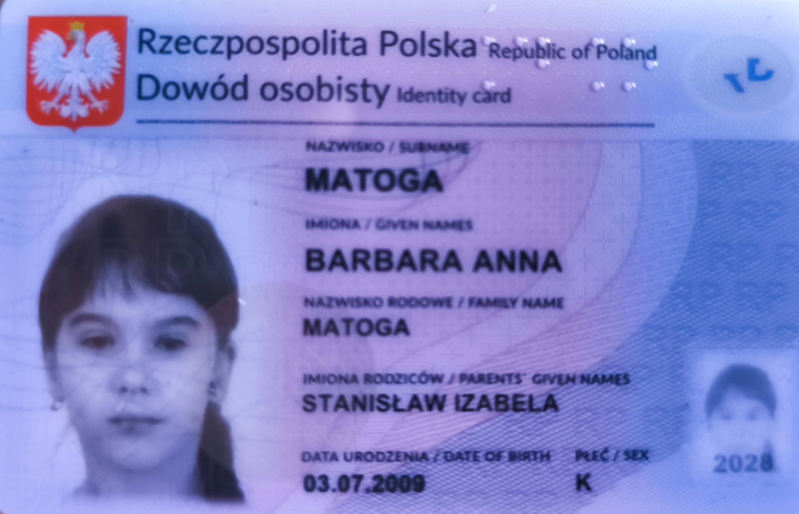

Pozyskanie dowodu osobistego
- Pierwsze obawy i zwątpienia
- Proces będzie długi i skomplikowany
- Na wydanie dowodu będę musiała czekać długi okres czasu
- Niespodziewany błąd w systemie przez który nie otrzymam dokumentu
- Proces ‐‐> wniosek i czynności
- Są dwie możliwości; wniosek można złożyć online przez serwis ePUAP lub wydrukować, wypełnić i zanieść osobiście do urzędu gminy/miasta, ja nie posiadając jeszcze profilu zaufanego wybrałam tą drugą opcję.
- Po wypełnieniu wniosku udałam się do urzędu gdzie następnie pobrano moją biometrię, podpis i wszystkie inne potrzebne informacje.
- Po jakoś dwóch tygodniach dostałąm list/maila/wiadomość, że dokument jest gotowy do odbioru (szczerze nie pamietam procedury tutaj).
- Finalny efekt + wygląd wniosku i dokumentu ‐‐‐‐‐‐ >
- Delikatne refleksje na temat systemu wyrabiania dokumentów
- Sam proces generalnie prosty, choć bardzo dużo formularzy do wypełnienia, zwłaszcza jeśli ktoś chce złożyć wniosek przez internet, gdzie trzeba mieć założone wcześniej wspomniane konto ePUAP, co również zajmuje trochę czasu na utworzenie.
- Coraz więcej spraw urzędowych załatwianych jest online, i formy papierowe są coraz mniej chętniej przyjmowane, przynajmniej według mnie, co może utrudnić zrobienie czegokolwiek starszym osobom, które niekoniecznie mają dostęp do internetu czy wiedzą jak się tym posługiwać.
- Raczej osobiście w przyszłości wolę formę elektroniczną na wypadek potrzeby wyrobienia innych dokumentów, moim zdaniem jest to obecnie najszybsza procedura i najłatwiejsza, pod warunkiem, że ktoś jakiś czas siedzi w informatyce i ma mniej więcej pojęcie co robi.


